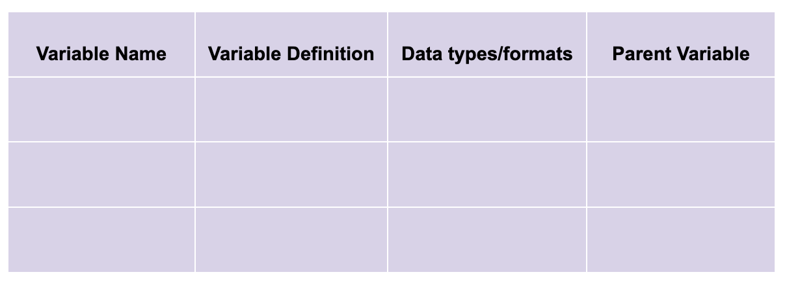

Standards are ubiquitous throughout the field of urban planning. From the development standards of municipal
codes of ordinances to emissions reporting standards of federal statutes, both planners and the municipalities
they serve are in many ways shaped both by what is contained within these standards and what is omitted from
them. Similarly, planners and the municipalities they serve are affected (for better or worse) by what is and is
not standardized.
A glaring exception in the ubiquity of standards in the planning profession are those applicable to
data, particularly the way that data is structured and interpreted. Metadata specifications, as they are called,
are
essential to planners’ ability to mobilize growing caches of information about the social and the built
environment and apply them to improve planning practice.
Social:
Examples of Data Standards
Here are some helpful examples of data standards. If you'd like more direct guidance on approach to
this Hackathon, feel free to email Lian Plass at lian.plass@gmail.com.
Whether you're a data newbie or a data wonk, this year's Hackathon has something for everyone.
The Challenge
Data standards help solve coordination problems between actors. For instance, in planning, data
standards
help cities maintain parcel records, allowing people to access accurate information about properties.
Data
standards also help coordinate transit schedules across jurisdictions and between applications.
For this challenge, propose a new lightweight data
standard
or modify an existing standard to enable planners
to measure and compare metrics for sustainable
development between
municipalities. This data standard should address either one or all of the three pillars of sustainability:
environmental, social, economic. It can also focus on specific
issues of sustainable development
such as equity or resilience, and economic development.
Optional
Show your proposed data standard in action! Develop a proof of concept for how the proposed data standard
can be applied in practice by using it to compare metrics for sustainable development between at least two
municipalities.
TEAMS:
Projects may be completed by individuals or teams of up to 5. If you would like to compete as a team, please
email Lian Plass with a list of your team members before November 30th.
SUBMISSIONS:
Submit an 800 to 2,000-word summary of the proposed standard using this submission form. Summaries should
include:
Explanation of rationale for developing or selecting your standard (what is the problem you are trying to
solve?)
Explanation of the proposed standard (reasons for variable selection, hierarchy, format, etc.)
Discussion of potential use cases for the proposed standard
A data structure diagram
Description of the schema containing variable names, variable definitions, data types/formats, parent
variables (if any), any other relevant characteristics of the input data:

More about the optional proof of concept submission
The proof of concept submission is fairly open-ended. Participants are free to choose how to represent their
proposed data standards, including through interactive maps, websites or Wikis, PowerPoints and recorded
presentations. In your submission consider including your rationale for selecting the chosen municipalities
for comparison, a copy of the resulting datasets, a few observations or descriptive statistics from those
datasets, any documentation explaining processing methodology, and a copy of or link to your source data.
Acceptable submission formats: PDF upload (10 MB max), website link, other
* If your submission falls into the "Other" format category, contact
Lian Plass at lianplass@gmail.com for
submission instruction
SCORING & AWARDS:
Awards
Best Overall: $200
Best in Category*: $50
* Categories are (1) applicability, (2) feasibility, and (3)
comprehensiveness. See also evaluation criteria below.
Evaluation Criteria
Applicability - How relevant is the proposed standard to planning practice?
Feasibility - How easy is it to integrate this standard into existing systems (planning and
otherwise)?
Comprehensiveness - How well does the summary and proof of concept address the challenge?